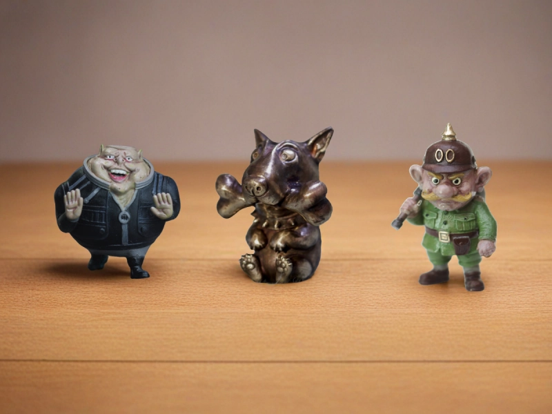
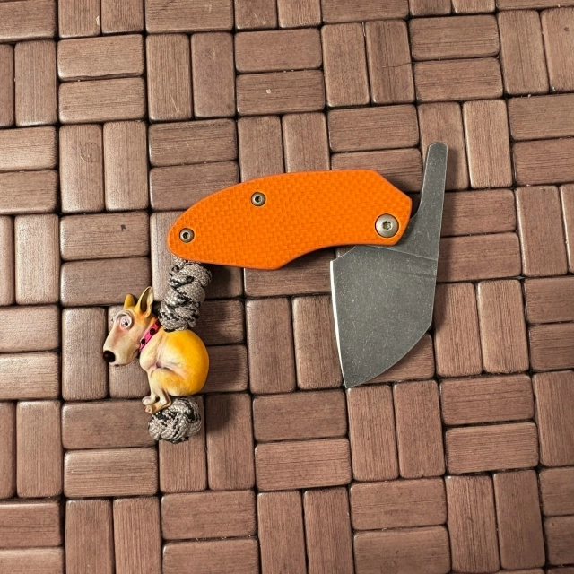
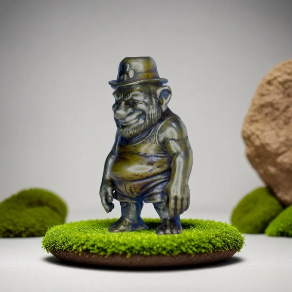
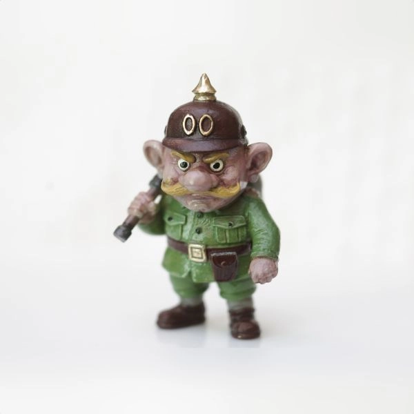
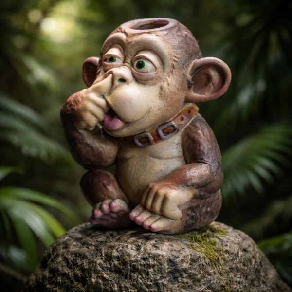
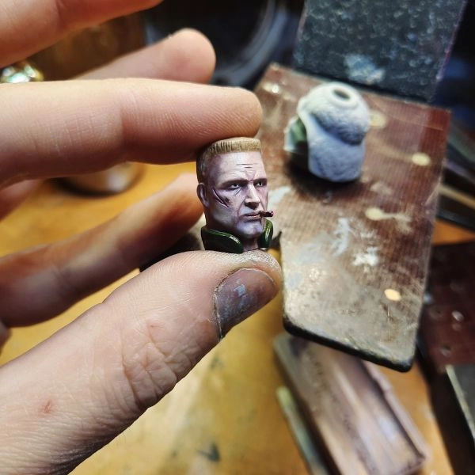
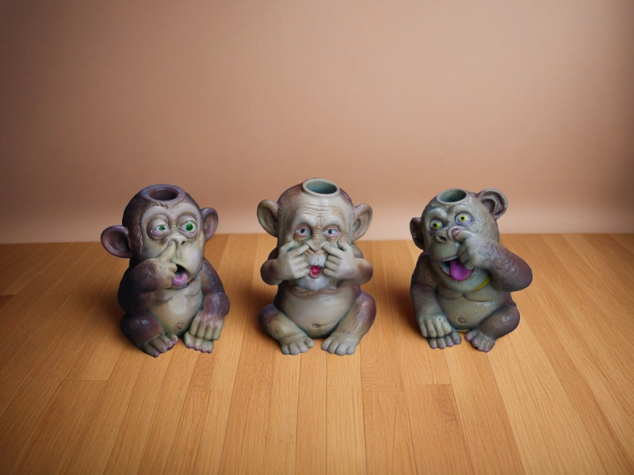

Как выбрать темлячную бусину, бусину на темляк и для ножа

Выбор темлячной бусины - это не только вопрос внешнего вида, особенно если вы хотите поставить её на нож, на темляк или на шнур из паракорда. Здесь важны не только образ и настроение вещи, но и размер, вес, отверстие, совместимость со шнуром и общий баланс.
Хорошая бусина на темляк должна быть удобной в руке, не мешать при ношении и сочетаться с ножом, темляком и вашим повседневным набором. Для кого-то это прежде всего бусина для ножа, для кого-то - небольшая авторская минифигурка, подарок или коллекционная миниатюра.
Если вы только знакомитесь с темой, рекомендуем сначала прочитать что такое темлячная бусина .
1. Сначала определитесь с задачей

Перед выбором важно понять, зачем вам нужна бусина. От этого зависит и материал, и размер, и общий характер модели.
- Для ножа - если нужна бусина для ножа или темляка для ножа, важны удобный хват, вес и практичность;
- Для темляка из паракорда - важно учитывать диаметр отверстия, толщину шнура и способ крепления;
- Для подарка или коллекции - здесь на первый план выходят образ, детализация и характер вещи;
- Как брелок - для ключей, сумки или рюкзака, когда особенно важны прочность и удобство.
Если вы делаете темляк самостоятельно, полезно также посмотреть как сделать темляк для ножа .
2. Материал: от него зависит ощущение вещи
Материал влияет не только на внешний вид, но и на вес, тактильные ощущения, долговечность и то, как бусина будет вести себя на темляке для ножа или на паракорде.
Металл (латунь)

Тяжёлый, надёжный и долговечный вариант. Со временем металл покрывается патиной и выглядит ещё интереснее.
Такие бусины хорошо подходят тем, кто хочет ощущение весомой вещи с характером и ищет выразительную бусину на нож или на темляк.
Посмотреть такие модели можно в каталоге темлячных бусин из металла .
Металл с покрасом

Комбинирует прочность металла и яркую художественную подачу. Такие модели выглядят как небольшие минифигурки и особенно хорошо подходят тем, кому важен выразительный образ.
Это удачный вариант, если хочется сочетания практичности и заметного характера вещи.
УФ-смола

Более лёгкий и яркий вариант. Хорошо подходит для повседневного использования, когда не нужен лишний вес на темляке или шнуре.
Это хороший выбор, если важны цвет, детализация и более лёгкое ощущение на темляке из паракорда.
Примеры можно посмотреть в разделе бусины из УФ-смолы .
3. Размер, вес и отверстие

Размер бусины напрямую влияет на удобство. Слишком маленькую бусину неудобно хватать, а слишком крупная может мешать при ношении, перегружать нож и смотреться случайно рядом с рукоятью.
Оптимальный вариант - когда бусина удобно ложится в руку и не спорит с самим ножом. Важно учитывать не только внешний размер, но и вес, особенно если это бусина для ножа на каждый день.
Отдельно стоит смотреть на отверстие. Если вы выбираете бусину на темляк из паракорда, заранее проверьте, проходит ли через неё нужный шнур и какой способ крепления вы планируете использовать.
Если темляк будет плетёным, с узлами или двойным проходом шнура, запас по отверстию особенно важен.
4. Форма, дизайн и характер
Темлячная бусина - это не только функция, но и способ придать вещи характер.
Кто-то выбирает строгие формы, кто-то - персонажей, головы, минифигурки и более сложные художественные образы.

Важно, чтобы бусина либо поддерживала характер ножа, либо осознанно добавляла ему контраст, но не выглядела чужой деталью.
Именно поэтому многие коллекционеры собирают целые серии. Подробнее об этом можно прочитать в статье о коллекционировании темлячных бусин .
5. Совместимость с ножом, темляком и паракордом
При выборе важно смотреть не на бусину отдельно, а на всю связку целиком: нож, темляк, шнур, узлы и способ крепления.
Если у вас уже есть темляк для ножа, подумайте, будет ли бусина дополнять его по весу и размеру. Если вы только собираете темляк из паракорда, заранее учитывайте толщину шнура, плотность плетения и длину хвоста.
Для некоторых моделей лучше подходит короткий и аккуратный темляк, для других - более длинный и заметный. Здесь нет универсального правила, но есть общий принцип: бусина не должна мешать пользоваться ножом и не должна выглядеть случайной.
6. Где купить темлячную бусину
Купить темлячную бусину, бусину на темляк или бусину для ножа можно на разных площадках, но важно понимать разницу между массовыми изделиями и авторской работой.
Авторская бусина - это не просто аксессуар, а вещь с характером, где важны материал, образ, детализация и ручная доводка.
Если вы хотите получить не случайную деталь, а действительно интересную модель, лучше смотреть изделия ручной работы и сопоставлять их не только по картинке, но и по размеру, весу и тому, как они будут работать на темляке.
Посмотреть актуальные модели можно в каталоге авторских темлячных бусин .
Частые ошибки при выборе
- покупка только по картинке без учёта размера;
- игнорирование веса, особенно для ножа на каждый день;
- выбор без учёта диаметра отверстия и толщины шнура;
- отсутствие понимания, будет ли бусина стоять на готовом темляке или на новом паракорде;
- желание взять что подешевле вместо действительно подходящей вещи.
Небольшой совет напоследок
Выбирайте бусину не только по внешнему виду, но и по тому, как она будет работать именно в вашей связке: нож, шнур, темляк, рука, привычка носить вещь каждый день.
Хорошая бусина на темляк - это та, которую приятно держать в руке, удобно ставить на шнур и действительно хочется носить, а не просто рассматривать на фотографии.
Если вы сомневаетесь, начните с просмотра каталога мастерской , где собраны разные стили, материалы и характеры моделей.
А если хотите сначала понять практическую сторону, посмотрите статью как сделать темляк для ножа .
Что делать дальше
Если этот материал уже разобран, дальше лучше перейти к ближайшим связанным темам — без длинного списка и лишних повторов.
Частые вопросы
Какую темлячную бусину выбрать новичку?
Лучше начать с универсальной модели среднего размера, которая подойдёт и как бусина на темляк, и как бусина для ножа. Важно, чтобы она была удобной по весу и понятной по размеру.
Что лучше - металл или смола?
Металл тяжелее, прочнее и даёт более весомое ощущение вещи. Смола легче и ярче. Выбор зависит от того, нужна ли вам более тяжёлая бусина на нож или более лёгкая модель для темляка и повседневного ношения.
Подойдут ли все бусины для паракорда?
Не всегда. Нужно смотреть на диаметр отверстия, толщину шнура, способ крепления и на то, будет ли темляк простым или плетёным.
Можно ли купить темлячную бусину в подарок?
Да. Многие авторские модели хорошо подходят в качестве подарка, особенно если выбрать образ, который связан с характером человека, его ножом или интересами.